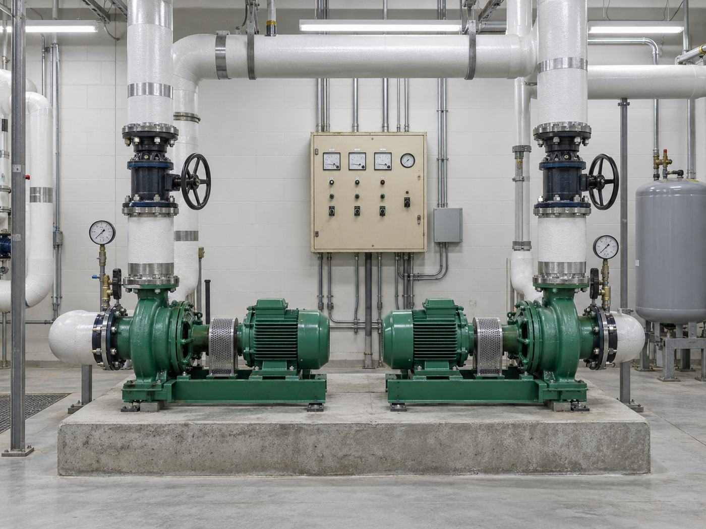

The problem with fixing the broken part
When a chilled water system fails repeatedly, there is always something obviously wrong with it, and it is tempting to replace that thing. A chiller is short cycling, so you service the chiller. A pump fails, so you replace the pump. Each fix is defensible on its own, and each one buys a few months.
That pattern is usually a symptom of something upstream. If a system was never balanced correctly as a whole, its components spend their lives fighting conditions they were not sized for, and they will keep failing no matter how many times you swap them out. That was the situation at Derby Line.
What we found
Rather than start with the equipment that had failed, we investigated the entire chilled water system: what the building actually needed, what the equipment was capable of, how the water moved, and what the controls were telling it to do. Four separate problems came out of it.
The chillers were poorly matched to the building's real cooling load. The circulation pumps were undersized for the distribution they were feeding. The piping layout worked against itself, so flow never reached where it needed to go. And the controls were out of date, running the plant on logic that no longer reflected the building.
Any one of those alone would cause trouble. Together they explain why every individual repair had failed. Replacing a pump in a system with a bad piping layout and mismatched chillers just moves the failure somewhere else.
What we did about it
We redesigned all four together, as one system rather than four separate fixes: chiller selection matched to the actual load, correctly sized circulation pumps, a reworked piping layout, and modern controls with a sequence written for the building as it exists now.
Then we stayed. Alares carried the project through construction and commissioned the finished system, which on a job like this is the part that determines whether the design intent survives. A redesigned plant installed to old habits is still an old plant.
The outcome
The chronic failures stopped. The building holds temperature, and it costs less to run than it did while it was failing.
The transferable lesson is not about chilled water. It is that repeated failures in a building system are rarely a component problem, even though they always look like one. Somebody has to be willing to investigate the whole system instead of the part in front of them, and that investigation is almost always cheaper than the fourth repair.
